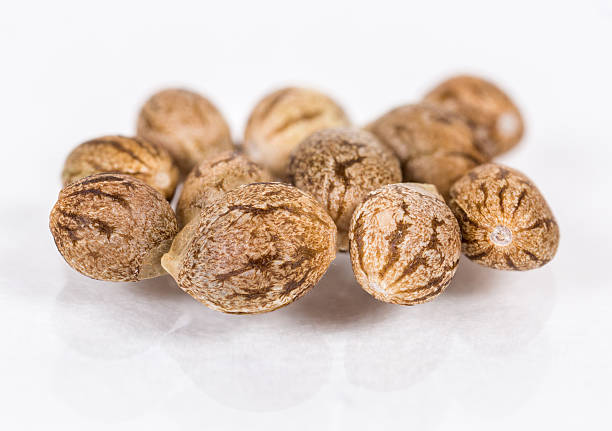

Semillas de calidad para cosechar grandes resultados.
La calidad de las semillas es la piedra angular de un cultivo exitoso. Las semillas de calidad ofrecen una alta tasa de germinación, asegurando que la mayoría de las semillas plantadas se conviertan en plantas saludables y productivas. Estas semillas son seleccionadas y procesadas meticulosamente para garantizar su pureza genética, resistencia a enfermedades y plagas, así como su adaptabilidad a diferentes condiciones climáticas.
